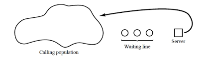
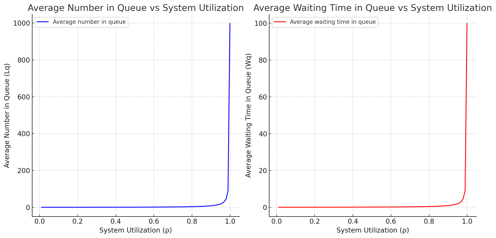
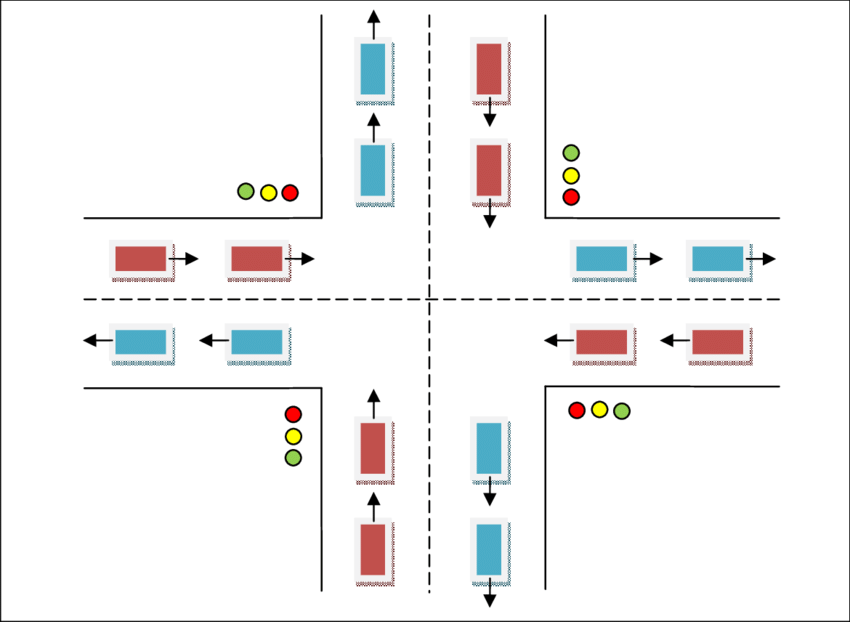
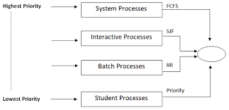
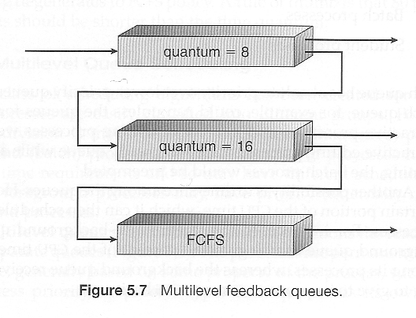

Q. What do you mean by Queuing system. Explain the charcteristis of queing system with example.
A Markov service process is a speial service process in which entities are processed one at a time in FCFS order and service times are independent and exponential.
As with the case of Markov arrivals, a Markov service process is memory less which means that the expected time until an entity is finished remains constant regardless of how long it has been in service.
| Discipline | Description |
|---|---|
| FIFO | This principle states that customers are served one at a time and the customer that has been waiting the longest is served first. |
| LIFO | This principle also serves one customer at a time. However, the customer with the shortest waiting time will be served first. |
| SIRO | A customer is picked up randomly from the waiting queue for service. |
| SPTF | THe next job to be served is the one with the smallest size (shrotest service time). |
| PR | Customers with high priority are served first. |
Queuing behaviour refers to the actions of customer while in a queue waiting for services to begin.
Different queue behaviors are:
In queuing theory, a discipline within the mathematical theory of probability, Kendall's notation is the standard system used to describe and clasify a queuing node.
D.G. Kendell [1953] represented Stochastic Process occuring on the theory of queue and their analysis by the method of imbeded Markov chain and gave a shorthand notation for queuing systems which has been widely adapted.
An abbreviated version of this convention is based on the format A/B/C/N/K/D where:
When N and K are infinite, they may be dropped from the notation.
When the final three parameters are not specified (eg. M/M/1), it is assumed N = $\infty$, K = $\infty$ and D = FIFO
Common symbols for A and B include:
| Characteristics | Symbol | Description |
|---|---|---|
| A - Interarrival Distribution | $D$ $C_k$ $E_k$ $G$ $G_d$ $G_{f0}$ $H_k$ $M$ $ME$ $MAP$ $PH$ |
Deterministic K Phase Enlarge General General/Independent Goemetric(dicrete) Hyper exponential Exponential(Markov) Matrix exponential Markov Arrival Process Phase Type |
| B - Series Time Distribution | $D$ $C_k$ $E_k$ $G$ $HI$ $KGFO$ $MK$ $M$ $MB$ $MAP$ $PG$ $SM$ |
Deterministic K-Phases Enlarge(K-Phase) General General Independent Geometric (discrete) Hyper Exponential Exponential Matrix exponential Markov Arrival Process Phase type Semi Markov |
Example 1: M/M/1/$\alpha$/$\alpha$
M|M|1
Example 2: D/M/1/10/50/LIFO
Servers represent the entity that provides services to the customers. A system may consist of single servers or multiple servers.
Queing Notation (Kendall's Notation)
A single channel queuing system is portrayed by the figure below:

So in a single server queue,

The multi-server queue consist of multiple servers and a common queue for all items. When any item requests for the server, it is allocated if at least one server is available ELSE the queue begins to start until the server is free.
In this system, we assume that all servers are identical i.e there is no difference which server is chosen for which item.
The total server utilization for an N-server system is given by:
$$
\rho = \frac{\lambda}{\mu N}
$$
Where,
$$
\lambda = \text{arrival rate}
$$
$$
\mu = \text{service rate}
$$
Fig shows a generalization of the simple model we have been discussing for multiple servers all sharing a common queue.
If an item arrives and at least one server is available, then the item is immediately dispatched to those servers.
It is assumed that all servers are identical, thus if more than one server is available, it makes no difference which server is chosen for the item.
If all servers are busy, a queue begins to form. As soon as one server becomes free, an item is dispatched from the queue using the dispatching displines in force.

The performance of a queing system can be evaluated in terms of a number of repsonsive parameters, however the following four are generally employed:
Average number of customer in the queue or in the system
Average waiting time of the customer in the queue or in the system
System utilization (Server utilization)
The cost of waiting time and idle time
If $T_a$ and $T_s$ be the inter arrival time and the mean service time then
$\text{Arrival rate} \ \lambda = \frac{1}{T_a}$
$\text{Service rate} \ \mu = \frac{1}{T_s}$
$\text{Average number of customer in the system} = \frac{\lambda}{(\mu - \lambda)}$
$\text{Average number of customer in the queue} = \frac{\lambda^2}{\mu(\mu-\lambda)}$
$\text{Average waiting time in the system} = \frac{1}{\mu-\lambda}$
$\text{Average waiting time in the queue} = \frac{\lambda}{\mu(\mu-\lambda)}$
It consists of only the arrival that gets served. It is denoted by and defined as $\rho = \lambda T_s = \frac{\lambda}{\mu}$ (server utilization for single server)
or, $\rho = \lambda T_s = \frac{\lambda}{n\mu}$ (server utilization for n servers)
Server/system utilization is the percentage of the time that all servers are busy. System utilization factor ($\rho$) is the ratio of average arrival rate ($\lambda$) to the average service rate ($\mu$)
$\rho = \frac{\lambda}{N}$ is the case of a single service model
$\rho = \frac{\lambda}{\mu n \sigma}$ is the case of a 'n' server model
The system utilization can be increased by increasing the arrival rate which amounts to increasing the average queue length as well as the average waiting time as shown in figure.
Under the normal circumstances 100% system utilization is not a realistic goal.

A congestion system is a system in which there is a demand for resources for a system and when the resources become unavailable, those requesting the resources wait for them to become available. The level of congestion in such systems is usually measured by the waiting line or queue of resources requesting (waiting line or queing models)
CSMP is an early scientific computer software designed for modelling and solving differential equations numerically, which enables real world system to be simulated and tested with a computer,
Types of statements in CSMP:
They define the model.
They consist o FORTRAN like statement and functional block designed for operations that frequently occur in model definition. Structural statements can make use of the operation of addition, subtraction, multiplication, division and exponentiation using the same notation and rules as are used in FORTRAN.
If the model include the equation
$x = \frac{6y}{w} + (z-2)^2$
Then the following statement would be used
$x = 6o*\frac{y}{w} + (z-2)**2o$
They assign numerical value to parameters, constants and intial conditions.
For example, one date statement called INCON can be used to set the initial value of integration function block.
They specify options in the assembly and execution of program and choice of inputs.
For example, if printed output is required, control statements with PRINT and PROEL are used followed by the name of variables to form the output.
experiment on big model
For example, flight

CPU scheduling is the basis of multiprogramming operating system, By switching the CPU among processes, the OS can make the computer more productive.

The process from the hightest priority queue are served until the queue becomes empty.

The number of process having the highest priority queue is very high than the lower priority. May store the processes for a long time.
To overcome: